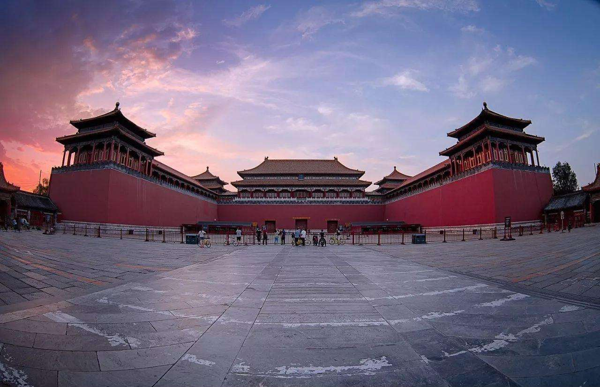

北京故宫博物院，旧称为紫禁城，位于北京中轴线的中心，是中国明、清两代24位皇帝的皇家宫殿，是中国古代汉族宫廷建筑之精华，无与伦比的建筑杰作，也是世界上现存规模最大、保存最为完整的木质结构古建筑之一。
走进故宫博物院，您沿中轴线前行，从起伏跌宕的建筑乐章中可以感受盛世皇朝的博大胸怀；可以透过东西六宫精巧的陈设和内廷园囿雅致的格局，捕捉宫廷生活的温婉气息；可以从养心殿东暖阁卷起的黄纱帘中，追溯百年前中华民族内忧外患的历史沧桑。
明朝（1368—1644年）和清朝（1644—1911年），是中国封建王朝史上最后两个朝代。两朝宫廷，既指是明清帝王使用的皇宫，也是明清两朝最高统治核心的代名词。明清宫廷五百多年的历史，作为整个明清史的一部分，以方便帝后活动，包括等级制度、权力斗争、宗教祭祀、饮食服饰等问题的研究，向人们展示这五百多年来明清帝后多姿多彩又冷酷残忍的生活画卷，同时，揭示了最高统治者统治权术、言行起居等对国家民族兴衰和社会生活走向的影响。
午门是紫禁城的正门，位于紫禁城南北轴线，此门居中向阳，位当子午，故名午门。午门前有端门、天安门（皇城正门，明代称承天门）、大清门（明代称大明门），其后有太和门（明代称奉天门，后改称皇极门，清代改今名）。各门之内，两侧排列整齐的廊庑。这种以门庑围成广场、层层递进的布局形式是受中国古代“五门三朝”制度的影响，有利于突出皇宫建筑威严肃穆的特点。
故宫宫殿的建筑布局有外朝、内廷之分。内廷与外朝的建筑气氛迥然不同。外朝以太和、中和、保和三大殿为中心，是封建皇帝行使权力、举行盛典的地方。太和殿俗称金銮殿，在故宫的中心部位，是故宫三大殿之一。
保和殿位于中和殿后，建成于明永乐十八年（1420年），初名谨身殿，嘉靖时遭火灾，重修后改称建极殿。清顺治二年改为保和殿，其意为“志不外驰，恬神守志”，就是说神志得专一，以保持宇内的和谐，才能福寿安乐，天下太平。保和殿匾额“皇建有极”匾，为乾隆御笔，典出：箕子《洪范》“皇建其有极”。